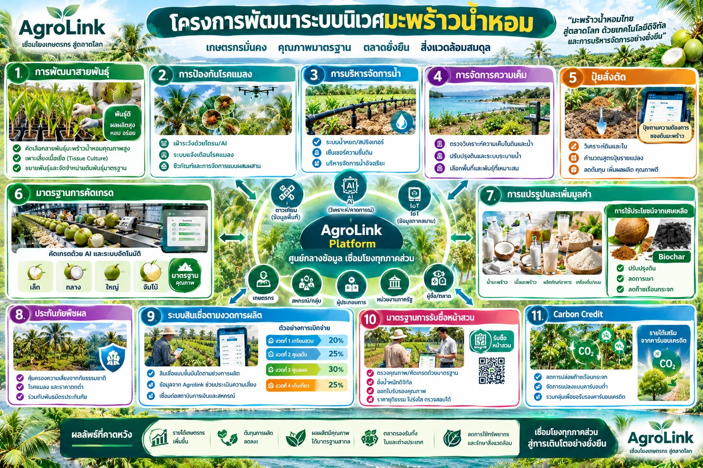

“มะพร้าวน้ำหอมไทยสู่ตลาดโลก ด้วยเทคโนโลยีดิจิทัลและการบริหารจัดการอย่างยั่งยืน” — เอกสารแนวคิดโครงการ (Concept Paper) ภายใต้โครงการ RAP-T (Resilient Agribusiness Program Thailand) เสนอต่อกระทรวงเกษตรและสหกรณ์
ฉบับร่างเพื่อพิจารณา — บริษัท ภักดี คอร์ปอเรชั่น จำกัด (AgroLink)
มะพร้าวน้ำหอมเป็นพืชเศรษฐกิจที่มีมูลค่าสูงและความต้องการเติบโตต่อเนื่องทั้งตลาดในประเทศและตลาดส่งออก แต่ปัจจุบันเกษตรกร สหกรณ์ ผู้รับซื้อหน้าสวน และหน่วยงานรัฐในห่วงโซ่มะพร้าวน้ำหอมยังทำงานแยกส่วนกัน เกณฑ์การรับซื้อและคัดเกรดไม่เป็นมาตรฐานเดียวกัน เกษตรกรขาดเงินทุนหมุนเวียนระหว่างรอผลผลิตซึ่งใช้เวลาปลูกถึงเก็บเกี่ยวยาวนานกว่า 200 วัน และเศษเหลือจากการแปรรูป เช่น กะลาและเปลือกมะพร้าว จำนวนมากยังไม่ถูกนำไปใช้ประโยชน์อย่างเป็นระบบ
โครงการนี้เสนอให้พัฒนา AgroLink Smart Coconut Ecosystem ภายใต้โครงการ RAP-T (Resilient Agribusiness Program Thailand) เป็นระบบนิเวศเศรษฐกิจมะพร้าวน้ำหอมที่เชื่อมโยงข้อมูลการผลิต เงินทุน คุณภาพ การรับซื้อ และการใช้ประโยชน์จากเศษเหลือไว้ในโครงสร้างเดียว โดย AgroLink ทำหน้าที่เป็นผู้พัฒนาโครงสร้างพื้นฐานดิจิทัล ไม่ปล่อยสินเชื่อและไม่กำหนดราคาเอง แนวคิดหลักประกอบด้วย 5 ด้าน
ภายใต้โครงการ RAP-T (Resilient Agribusiness Program Thailand) มะพร้าวน้ำหอมได้รับการกำหนดเป็นหนึ่งในห่วงโซ่มูลค่าเป้าหมาย โดยมีการกำหนดรหัสสินค้ามาตรฐาน COCONUT_AROMATIC และปฏิทินการผลิตอ้างอิง 5 ระยะ รวมระยะเวลาประมาณ 210 วันต่อรอบการผลิต ได้แก่ การผสมเกสรและให้ปุ๋ยเริ่มต้น (วันที่ 0) ระยะออกดอก (วันที่ 40) ระยะติดผล (วันที่ 90) ระยะผลแก่เต็มที่ (วันที่ 180) และระยะเก็บเกี่ยว (วันที่ 210) ปฏิทินนี้เป็นฐานข้อมูลสำคัญสำหรับการวางแผนปุ๋ย น้ำ และการเบิกจ่ายสินเชื่อตามงวดการผลิตให้สอดคล้องกับความต้องการจริงของต้นมะพร้าวในแต่ละช่วง
โครงการนี้ยังให้ความสำคัญเป็นพิเศษกับการพัฒนาเศษเหลือจากการแปรรูปมะพร้าวน้ำหอม โดยเฉพาะกะลาและเปลือกมะพร้าว ให้กลายเป็น Biochar ซึ่งเป็นแนวทางหนึ่งของ RAP-T ในการลดการเผาวัสดุเหลือใช้ทางการเกษตรในที่โล่ง ลดการปล่อยก๊าซเรือนกระจก และสร้างมูลค่าเพิ่มให้แก่ผลพลอยได้ที่เดิมแทบไม่มีมูลค่าทางเศรษฐกิจ โดยเชื่อมโยงกับโครงสร้างพื้นฐานด้านชีวมวลที่ AgroLink พัฒนาไว้แล้ว (รายละเอียดหัวข้อ 5.2)
อย่างไรก็ตาม ห่วงโซ่อุปทานมะพร้าวน้ำหอมในปัจจุบันยังเผชิญปัญหาเชิงโครงสร้างใน 4 ด้าน
| ด้าน | ปัญหาหลัก |
|---|---|
| การผลิต | สวนจำนวนมากอยู่ในพื้นที่ราบลุ่มใกล้ชายฝั่งหรือปากแม่น้ำ เสี่ยงต่อความเค็มของดินและน้ำที่กระทบรสชาติและผลผลิต; การใช้ปุ๋ยยังไม่อิงค่าวิเคราะห์ดิน/ใบรายแปลง; ต้นพันธุ์ที่ตรวจสอบแหล่งที่มาได้ยังมีจำกัด |
| คุณภาพและมาตรฐาน | เกณฑ์การรับซื้อและคัดเกรดหน้าสวนยังไม่เป็นมาตรฐานเดียวกัน; การชั่งน้ำหนักและคัดขนาด (เล็ก/กลาง/ใหญ่/จัมโบ้) มักทำด้วยสายตา เกิดข้อโต้แย้งเรื่องราคา |
| ตลาดและการเงิน | เกษตรกรขาดเงินทุนหมุนเวียนระหว่างรอผลผลิตที่ใช้เวลานานกว่า 200 วัน; การเข้าถึงสินเชื่อตามวงจรการผลิตจริงและประกันภัยพืชผลยังมีจำกัด |
| สิ่งแวดล้อมและเศษเหลือ | กะลา เปลือก และกาบมะพร้าวจำนวนมากไม่ได้ใช้ประโยชน์อย่างเป็นระบบ บางส่วนถูกเผาทิ้งในที่โล่งแทนที่จะแปรรูปเป็น Biochar หรือผลิตภัณฑ์ชีวมวลอื่น |
จึงเสนอให้กระทรวงเกษตรและสหกรณ์ร่วมกับภาคเอกชน สหกรณ์ กลุ่มเกษตรกร ผู้รับซื้อหน้าสวน และสถาบันการเงิน พัฒนา AgroLink Smart Coconut Ecosystem ภายใต้กรอบโครงการ RAP-T เพื่อยกระดับอุตสาหกรรมมะพร้าวน้ำหอมไทยอย่างครบวงจร
วัตถุประสงค์หลัก: สร้างระบบนิเวศเศรษฐกิจมะพร้าวน้ำหอมที่ทำให้เกษตรกรมีรายได้มั่นคง มีตลาดรองรับ ผลิตมะพร้าวน้ำหอมคุณภาพสูง และใช้ประโยชน์จากเศษเหลือได้อย่างยั่งยืน
AgroLink เป็นศูนย์กลางเชื่อมข้อมูลและธุรกรรมตลอดห่วงโซ่ โดยไม่ทำหน้าที่ปล่อยสินเชื่อหรือกำหนดราคามะพร้าวน้ำหอม แต่พัฒนาโครงสร้างพื้นฐานดิจิทัลให้ผู้เกี่ยวข้องทำธุรกรรมอย่างโปร่งใสและเป็นธรรม เชื่อมโยงข้อมูลดาวเทียม เซ็นเซอร์ IoT และ AI เข้ากับเกษตรกร สหกรณ์ ผู้ประกอบการ หน่วยงานภาครัฐ และผู้ซื้อ/ตลาด ไว้ในศูนย์กลางข้อมูลเดียวกัน
| กลุ่ม | ผู้เกี่ยวข้อง | บทบาทในโครงการ |
|---|---|---|
| ต้นน้ำ | เกษตรกรผู้ปลูกมะพร้าวน้ำหอม | ผลิตตามมาตรฐาน บันทึกข้อมูลการผลิต จำหน่ายผ่านระบบ |
| ต้นน้ำ | กลุ่มเกษตรกร / สหกรณ์ | รวมซื้อปัจจัยการผลิต ผสมปุ๋ยสั่งตัด รวมรับซื้อผลผลิต บริหารสมาชิก |
| ต้นน้ำ | ผู้ผลิตต้นพันธุ์ (เพาะเลี้ยงเนื้อเยื่อ) | จำหน่ายต้นพันธุ์มะพร้าวน้ำหอมคุณภาพสูงพร้อมตรวจสอบแหล่งที่มาได้ |
| ต้นน้ำ | ผู้จำหน่ายปัจจัยการผลิต | ปุ๋ย สารชีวภัณฑ์ อุปกรณ์ระบบน้ำ บริการผสมปุ๋ยสั่งตัด |
| กลางน้ำ | ผู้รับซื้อหน้าสวน / ผู้รวบรวมผลผลิต | รับซื้อตามมาตรฐาน ชั่งน้ำหนักดิจิทัล คัดเกรด ออกใบรับรองคุณภาพ |
| กลางน้ำ | ผู้ผลิตสินค้าจากชีวมวล (Biochar) | แปรรูปกะลา/เปลือกมะพร้าวเหลือใช้เป็น Biochar และปุ๋ยอินทรีย์ ลงทะเบียนผ่านพอร์ทัลผู้ผลิตสินค้าจากชีวมวล |
| ปลายน้ำ | โรงงานแปรรูป / ผู้ส่งออก | แปรรูปน้ำมะพร้าว เนื้อมะพร้าว ผลิตภัณฑ์แปรรูป และส่งออก |
| ปลายน้ำ | Modern Trade / ผู้ซื้อในประเทศ | รับซื้อตามมาตรฐานคุณภาพที่ตรวจสอบได้ |
| สนับสนุน | สถาบันการเงิน / ประกันภัย | สินเชื่อตามงวดการผลิต เงินทุนหมุนเวียน ประกันภัยพืชผล |
| สนับสนุน | หน่วยงานภาครัฐ | ส่งเสริม กำกับมาตรฐาน ตรวจสอบ วางแผนนโยบายภายใต้กรอบ RAP-T |
| แกนกลาง | AgroLink Platform | Digital Infrastructure เชื่อมโยงข้อมูล บริหารธุรกรรม สนับสนุนการตรวจสอบตลอดห่วงโซ่ |
ทั้ง 11 ระบบงานเชื่อมโยงกันผ่าน AgroLink Platform ซึ่งทำหน้าที่เป็นศูนย์กลางข้อมูล รวบรวมข้อมูลดาวเทียม (ขอบเขตแปลง สุขภาพพืช) ข้อมูล IoT ภาคสนาม (ความชื้นดิน ความเค็ม สภาพอากาศ) และผลวิเคราะห์ด้วย AI เข้าด้วยกัน แล้วส่งต่อให้เกษตรกร สหกรณ์/กลุ่ม ผู้ประกอบการ หน่วยงานภาครัฐ และผู้ซื้อ/ตลาด ใช้งานร่วมกัน
ระบบสินเชื่อของโครงการอ้างอิงปฏิทินการผลิตมาตรฐาน COCONUT_AROMATIC ภายใต้ RAP-T ซึ่งแบ่งรอบการผลิตออกเป็น 5 ระยะ รวม 210 วัน โดยเบิกจ่ายสินเชื่อเป็น 4 งวดตามช่วงที่เกษตรกรต้องใช้เงินทุนจริง แทนการให้เงินก้อนเดียวตั้งแต่ต้น ซึ่งช่วยลดความเสี่ยงทั้งฝั่งเกษตรกรและสถาบันการเงิน
| งวดที่ | ช่วงการผลิต (อ้างอิงปฏิทิน RAP-T) | สัดส่วนการเบิกจ่าย |
|---|---|---|
| งวดที่ 1 | เตรียมสวน (วันที่ 0 — ผสมเกสร/ให้ปุ๋ยเริ่มต้น) | 20% |
| งวดที่ 2 | ดูแลต้น (วันที่ 40 — ระยะออกดอก) | 25% |
| งวดที่ 3 | ระยะติดผล/บำรุงผล (วันที่ 90 — ผลแก่ถึงวันที่ 180) | 30% |
| งวดที่ 4 | เก็บเกี่ยว (วันที่ 210) | 25% |
การแปรรูปมะพร้าวน้ำหอมในแต่ละวันก่อให้เกิดเศษเหลือจำนวนมาก โดยเฉพาะกะลา เปลือก และกาบมะพร้าว ซึ่งในอดีตมักถูกเผาทิ้งในที่โล่งหรือทิ้งเป็นขยะ ก่อให้เกิดก๊าซเรือนกระจกและมลพิษทางอากาศ โครงการ RAP-T จึงกำหนดให้ “การพัฒนาเศษเหลือให้เป็น Biochar” เป็นหนึ่งในแนวทางหลักของห่วงโซ่มะพร้าวน้ำหอม เพื่อเปลี่ยนของเสียให้เป็นสินค้าที่มีมูลค่า พร้อมช่วยปรับปรุงดิน ลดการเผา และลดการปล่อยก๊าซเรือนกระจก
กลไกที่ใช้จริงบนแพลตฟอร์ม AgroLink คือพอร์ทัลผู้ผลิตสินค้าจากชีวมวล (Biomass Product Producer Portal) ซึ่งเปิดให้สหกรณ์ กลุ่มเกษตรกร หรือผู้ประกอบการที่แปรรูปกะลา/เปลือกมะพร้าวเป็น Biochar ลงทะเบียนเลือกประเภทสินค้า “ไบโอชาร์ (Biochar)” พร้อมข้อมูลกำลังการผลิตและช่องทางติดต่อ แล้วปรากฏเป็นการ์ดในทำเนียบผู้ผลิตสาธารณะให้ผู้รับซื้อค้นหาและติดต่อได้โดยตรง เชื่อมฝั่งผู้ผลิตเศษเหลือกับฝั่งผู้ต้องการ Biochar ไปปรับปรุงดินหรือใช้ประโยชน์ด้านอื่นเข้าด้วยกัน
ปัจจุบันเกณฑ์การรับซื้อมะพร้าวน้ำหอมหน้าสวนแตกต่างกันไปตามผู้รับซื้อแต่ละราย ขาดมาตรฐานกลางที่เกษตรกรใช้อ้างอิงได้ โครงการจึงกำหนดมาตรฐานการรับซื้อหน้าสวนร่วมกัน ประกอบด้วย
มาตรฐานนี้ใช้ร่วมกับระบบคัดเกรดในหัวข้อ 5 (มาตรฐานการคัดเกรด) และเชื่อมโยงกับข้อมูลปฏิทินการผลิตในหัวข้อ 5.1 เพื่อให้ราคารับซื้อสะท้อนทั้งคุณภาพจริงของผลผลิตและช่วงเวลาที่เก็บเกี่ยว
โครงการคาดว่าจะสร้างผลลัพธ์เชิงบวกแก่ทุกฝ่ายในห่วงโซ่มะพร้าวน้ำหอม สอดคล้องกับเป้าหมายของโครงการ RAP-T
| ความเสี่ยง | แนวทางบริหารจัดการ |
|---|---|
| ความเค็มของดินและน้ำที่เปลี่ยนแปลงตามฤดูกาล | ตรวจวัดและแจ้งเตือนผ่านระบบจัดการความเค็ม (หัวข้อ 5) ร่วมกับคำแนะนำการปรับปรุงดินและระบบระบายน้ำ |
| ความผันผวนของราคาตลาดส่งออก | มาตรฐานการรับซื้อหน้าสวนที่โปร่งใส (หัวข้อ 6) และข้อมูลราคาตามเกรดช่วยให้เกษตรกรวางแผนการขายได้ดีขึ้น |
| ภัยธรรมชาติและโรคแมลงระบาด | ประกันภัยพืชผล (หัวข้อ 5) และระบบเฝ้าระวังด้วยโดรน/AI ช่วยลดความเสียหายและผลกระทบต่อรายได้ |
| ความเสี่ยงด้านสินเชื่อของเกษตรกรรายย่อย | สินเชื่อตามงวดการผลิตที่อ้างอิงข้อมูลจริง (หัวข้อ 5.1) ช่วยให้สถาบันการเงินประเมินความเสี่ยงได้แม่นยำขึ้นโดยไม่เพิ่มภาระหนี้เกินจำเป็น |
ไม่ว่าจะในฐานะสหกรณ์ เกษตรกร ผู้รับซื้อหน้าสวน ผู้ผลิตสินค้าจากชีวมวล หรือพันธมิตรทางธุรกิจ ติดต่อทีมงาน AgroLink เพื่อขอข้อมูลเพิ่มเติมได้ทันที